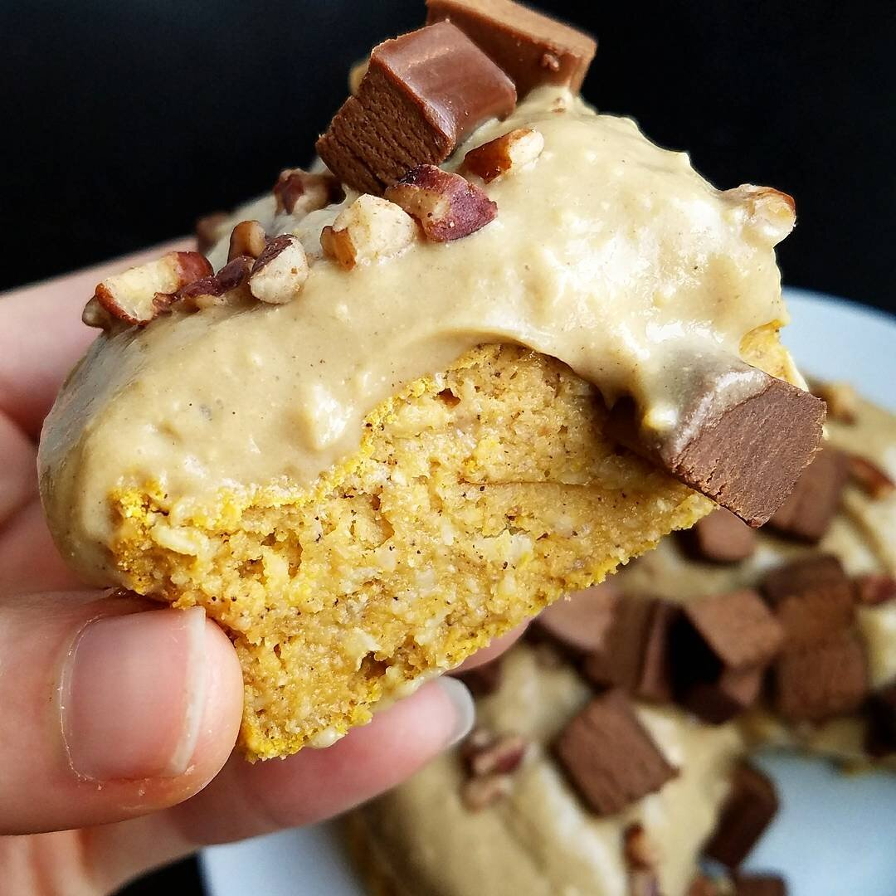
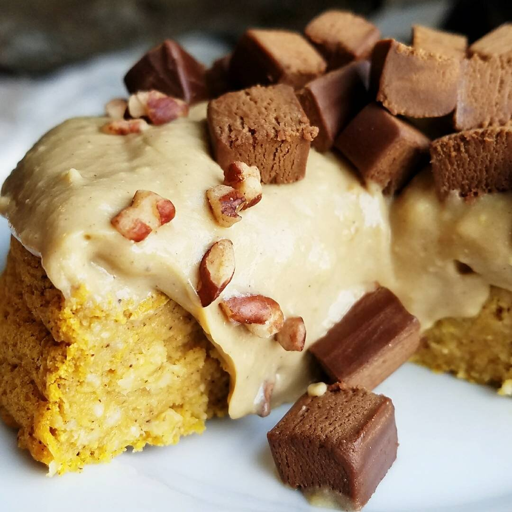
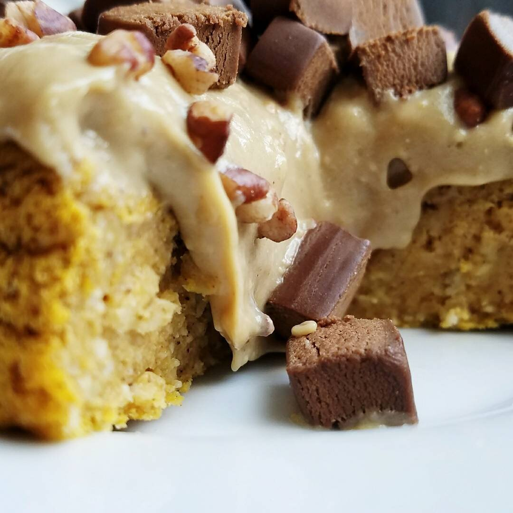

Single Ladies Vegan Carrot Cake (gf)



In celebration of Easter this past weekend, I made a yummy vegan carrot cake! This cake is dairy free, gluten free, and sugar free. It is the perfect amount for one person to enjoy a couple servings of. Share if you must, but you totally shouldn't.
This cake yields 4 slices, aka 1 Kim serving. It is so moist, sweet, and simple to make! I don't know about you, but cake is most definitely my favorite texture for a dessert. Cookies are alright. Pie is just okay. But any kinds of cakes, cupcakes, fluffy anything...I'm all over it. I topped this vegan carrot cake with my go-to vanilla protein icing, pecans, and the new fudge brownie 22 Days Nutrition protein bar (from Target).
Have you seen 13 Reasons Why on Netflix? I loved the book, and knew I'd love the show. I really do. Some parts are difficult to watch but...there are some concerns regarding mental health I've become aware of them not totally hitting right. Have you seen the show? How do you feel they do at addressing everything? To me, I think they do a good job at making suicide and mental health more main stream to bring awareness. There are some marks that they miss where they have a perfect chance to hit. But as a TV show based off a book...I think they do a good job when the main point is to illustrate the book. I don't know. Tell me how you feel.
Now that I've finished binging that, I'm watching Please Like Me on Hulu (as recommended by Leah!!) and it's amazing. So many great one liners. I'm pretty sure I've had many of these awkward conversations in real life on many occasions hahaha. Like the conversation about how male giraffes make female giraffes pee in order to taste whether they're fertile. That's definitely occurred in my life....I have a giraffe obsession problem. I'm aware that it's weird.
Anyways! That's mostly what I've been doing lately. TV shows and doing life. And eating yummy baked goods. Try out this vegan carrot cake and let me know what you think! It's quick to make, gluten free, and healthy!
Single Ladies Vegan Carrot Cake
Serves: 4
Cake Batter
-
1/2 cup raw oats
-
2 TBSP coconut flour
-
1 tsp ener g egg replacer(optional)
-
1 tsp baking powder
-
1/2 tsp cinnamon
-
1/4 tsp nutmeg
-
1 stevia packet
-
1/4 cup carrot puree
-
1/2 cup almond milk
Icing + toppings
-
15 g vanilla Nuzest protein powder
-
1 TBSP sugar free pudding mix
-
1/4 cup water
-
1-2 TBSP syrup
-
1 TBSP pecans
Preheat the oven to 350 F. Grind the oats into a flour. Then mix with the remaining cake batter ingredients until a thick, even batter has formed. Pour the batter into a mini springform pan (or mini loaf pan) that has been sprayed with nonstick spray. Bake at 350F for 28-30 mins.
To make the icing, mix the protein powder, pudding mix, water, and syrup. I use either sugar free syrup or maple syrup depending on my mood. Top the cake. Sprinkle with pecans. Then cut into 4 slices and serve!
Nutritional info for 1 slice (includes icing + pecans): 104 cals, 3 g fat, 14 g carbs, and 5 g protein